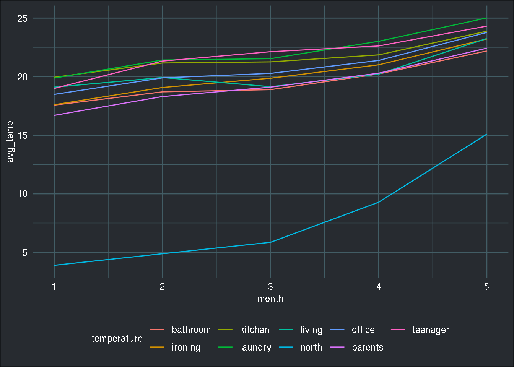
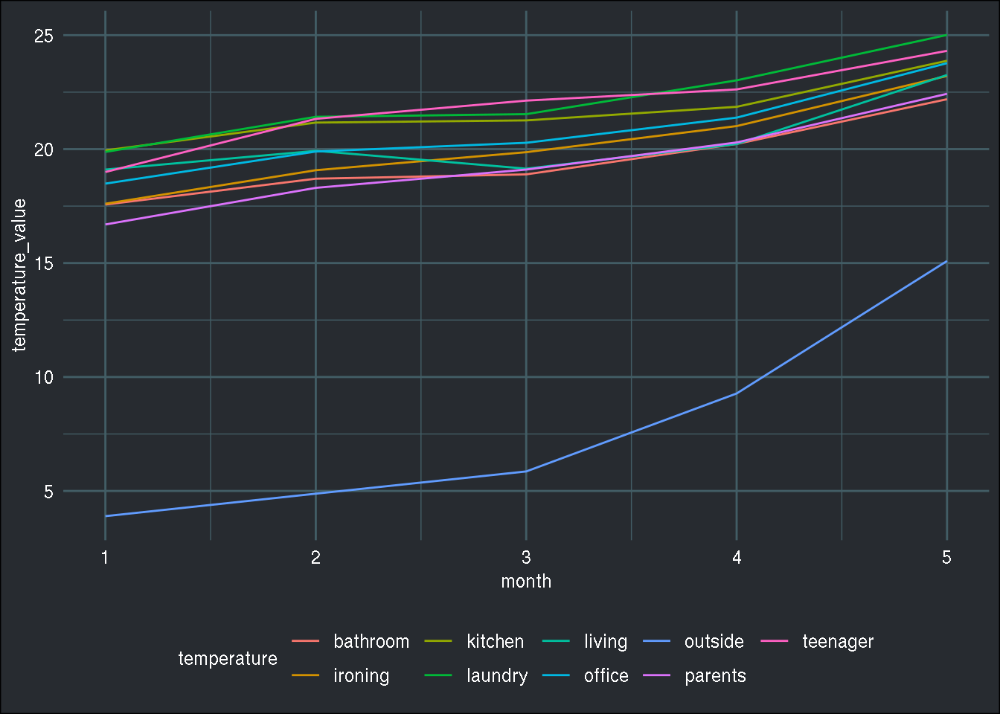

Gotta go fast with “{tidytable}”
I’m back in business! After almost 5 months of hiatus, during which I was very busy with my new job, and new house, I’m in a position where I can write again. To celebrate my comeback, I’ll introduce to you the {tidytable} package, which I learned about this week on Twitter.
{tidytable} is a package that allows you to manipulate data.table objects with the speed of {data.table} and the convenience of the {tidyverse} syntax. My first reaction when I heard about {tidytable} was how is that different from {dtplyr}? Well, {dtplyr} focuses on providing a {data.table} backend for {dplyr}, while {tidytable} also allows you to use other {tidyverse} verbs on data.table objects, for instance some {tidyr} and {purrr} verbs.
Another very interesting feature of {tidytable} is that it supports {rlang}, which means that you can program with {tidytable}, which, as far as I know, is not possible with {dtplyr} (but fact-check me on that please).
So to summarise, the speed of {data.table} and the syntax of the {tidyverse}, plus verbs for {tidyr} and {purrr}? Sign me up!
To illustrate, I have downloaded a data set and wrote a function in both a {tidyverse} version and a {tidytable} version. Even though it is true that {tidytable}’s syntax is very much, almost the same as the regular {tidyverse} syntax, there are some minor differences. But more on that later. First, let’s get the data, which you can find here. Then, let’s load the needed packages:
library(tidyverse)
library(data.table)
library(tidytable)
library(readr)and let’s take a look at the data a little bit:
energy <- read.csv("~/Downloads/energydata_complete.csv")
head(energy)## date Appliances lights T1 RH_1 T2 RH_2 T3
## 1 2016-01-11 17:00:00 60 30 19.89 47.59667 19.2 44.79000 19.79
## 2 2016-01-11 17:10:00 60 30 19.89 46.69333 19.2 44.72250 19.79
## 3 2016-01-11 17:20:00 50 30 19.89 46.30000 19.2 44.62667 19.79
## 4 2016-01-11 17:30:00 50 40 19.89 46.06667 19.2 44.59000 19.79
## 5 2016-01-11 17:40:00 60 40 19.89 46.33333 19.2 44.53000 19.79
## 6 2016-01-11 17:50:00 50 40 19.89 46.02667 19.2 44.50000 19.79
## RH_3 T4 RH_4 T5 RH_5 T6 RH_6 T7 RH_7
## 1 44.73000 19.00000 45.56667 17.16667 55.20 7.026667 84.25667 17.20000 41.62667
## 2 44.79000 19.00000 45.99250 17.16667 55.20 6.833333 84.06333 17.20000 41.56000
## 3 44.93333 18.92667 45.89000 17.16667 55.09 6.560000 83.15667 17.20000 41.43333
## 4 45.00000 18.89000 45.72333 17.16667 55.09 6.433333 83.42333 17.13333 41.29000
## 5 45.00000 18.89000 45.53000 17.20000 55.09 6.366667 84.89333 17.20000 41.23000
## 6 44.93333 18.89000 45.73000 17.13333 55.03 6.300000 85.76667 17.13333 41.26000
## T8 RH_8 T9 RH_9 T_out Press_mm_hg RH_out Windspeed Visibility
## 1 18.2 48.90000 17.03333 45.53 6.600000 733.5 92 7.000000 63.00000
## 2 18.2 48.86333 17.06667 45.56 6.483333 733.6 92 6.666667 59.16667
## 3 18.2 48.73000 17.00000 45.50 6.366667 733.7 92 6.333333 55.33333
## 4 18.1 48.59000 17.00000 45.40 6.250000 733.8 92 6.000000 51.50000
## 5 18.1 48.59000 17.00000 45.40 6.133333 733.9 92 5.666667 47.66667
## 6 18.1 48.59000 17.00000 45.29 6.016667 734.0 92 5.333333 43.83333
## Tdewpoint rv1 rv2
## 1 5.3 13.27543 13.27543
## 2 5.2 18.60619 18.60619
## 3 5.1 28.64267 28.64267
## 4 5.0 45.41039 45.41039
## 5 4.9 10.08410 10.08410
## 6 4.8 44.91948 44.91948
As you can see, this data is wide, and not long. Variables, or features, T1 to T9 provide the temperature of 9 rooms, and RH_1 to RH_9 provide the humidity of the same 9 rooms.
What if I’d like to make a plot of each room’s temperature throughout the year? In this format, it is not possible. So let’s reshape this a little bit:
flat_energy <- energy %>%
pivot_longer(cols = matches("T\\d{1}"), names_to = "temperature", values_to = "temp_value") %>%
pivot_longer(cols = matches("RH_\\d{1}"), names_to = "humidity", values_to = "hum_value") %>%
mutate(temperature = case_when(temperature == "T1" ~ "kitchen",
temperature == "T2" ~ "living",
temperature == "T3" ~ "laundry",
temperature == "T4" ~ "office",
temperature == "T5" ~ "bathroom",
temperature == "T6" ~ "north",
temperature == "T7" ~ "ironing",
temperature == "T8" ~ "teenager",
temperature == "T9" ~ "parents")) %>%
mutate(humidity = case_when(humidity == "RH_1" ~ "kitchen",
humidity == "RH_2" ~ "living",
humidity == "RH_3" ~ "laundry",
humidity == "RH_4" ~ "office",
humidity == "RH_5" ~ "bathroom",
humidity == "RH_6" ~ "north",
humidity == "RH_7" ~ "ironing",
humidity == "RH_8" ~ "teenager",
humidity == "RH_9" ~ "parents"))
As explained above, there are two variables that need this treatment; the temperature, and the humidity levels. In order to plot the average monthly temperature in each room, I need to use tidyr::pivot_longer() (a little side note, I could have used names_to = “room”, instead of “temperature” and “humidity”, but there’s a reason for that. More on it below).
Now let’s plot it:
flat_energy %>%
mutate(month = month(date)) %>%
group_by(month, temperature) %>%
summarise(avg_temp = mean(temp_value)) %>%
ggplot() +
geom_line(aes(y = avg_temp, x = month, col = temperature)) +
brotools::theme_blog()## `summarise()` regrouping output by 'month' (override with `.groups` argument) Ok great. But what if I had such a dataset per house for a whole city? How many datasets would that be? And how long would these operations take? The first step I would take if I were in this situation, would be to write a function. I would make it general enough to work with temperature or humidity. Below is this function:
prepare_data <- function(energy, variable){
variable <- enquo(variable)
variable_label <- as_label(variable)
regex_selector <- ifelse(variable_label == "temperature",
"T\\d{1}",
"RH_\\d{1}")
energy %>%
pivot_longer(cols = matches(regex_selector),
names_to = variable_label,
values_to = paste0(variable_label, "_value")) %>%
mutate(!!(variable) := case_when(grepl("1$", !!(variable)) ~ "kitchen",
grepl("2$", !!(variable)) ~ "living",
grepl("3$", !!(variable)) ~ "laundry",
grepl("4$", !!(variable)) ~ "office",
grepl("5$", !!(variable)) ~ "bathroom",
grepl("6$", !!(variable)) ~ "outside",
grepl("7$", !!(variable)) ~ "ironing",
grepl("8$", !!(variable)) ~ "teenager",
grepl("9$", !!(variable)) ~ "parents")) %>%
mutate(month = month(date)) %>%
group_by(month, !!(variable)) %>%
summarise(across(.cols = ends_with("_value"),
.fns = mean),
.groups = "drop")
}This function does exactly the same thing as above:
prepare_data(energy, temperature) %>%
ggplot() +
geom_line(aes(y = temperature_value, x = month, col = temperature)) +
brotools::theme_blog()
As you can see, I have the exact same plot. What’s nice with this function, is that it uses many verbs from the {tidyverse} as well as the tidy eval framework for non-standard evaluation ( which is why I did not use names_to = “room”, I wanted to use the variable label defined with as_label() and see if it works with {tidytable} as well). Ok, so now let’s imagine that I’m happy with this function, but I’d like it to run faster, and because I’m lazy, the less I have to modify it, the happier I am. This is where {tidytable} looks very promising. Let’s rewrite the function to make it work with {tidytable}:
prepare_data_dt <- function(energy, variable){
variable <- enquo(variable)
variable_label <- as_label(variable)
regex_selector <- ifelse(variable_label == "temperature",
"T\\d{1}",
"RH_\\d{1}")
energy %>%
pivot_longer.(cols = matches(regex_selector),
names_to = variable_label,
values_to = paste0(variable_label, "_value")) %>%
mutate.(!!(variable) := case_when(grepl("1$", !!(variable)) ~ "kitchen",
grepl("2$", !!(variable)) ~ "living",
grepl("3$", !!(variable)) ~ "laundry",
grepl("4$", !!(variable)) ~ "office",
grepl("5$", !!(variable)) ~ "bathroom",
grepl("6$", !!(variable)) ~ "outside",
grepl("7$", !!(variable)) ~ "ironing",
grepl("8$", !!(variable)) ~ "teenager",
grepl("9$", !!(variable)) ~ "parents")) %>%
mutate.(month = month(date)) %>%
summarise_across.(.cols = ends_with("_value"),
.fns = mean,
.by = c(month, !!(variable))) %>%
ungroup()
}
As you can see, it’s almost the same thing. {tidytable} verbs end with a ‘.’ and that’s it. Well almost (again), the biggest difference is how {tidytable} groups by a variable. It’s very similar to how it’s done in {data.table}, by using a .by = argument to verbs that support it, such as summarise_across() (which is also, by the way, another difference with standard {tidyverse} syntax). While I’ll have to remember these, I’d argue that they’re minor differences and if it can make my function run faster, I don’t mind!
Now let’s run a little benchmark. But first, let’s define our data as a tidytable object:
energy_tidytable <- as_tidytable(energy)Now we’re good to go:
microbenchmark::microbenchmark(
energy %>%
prepare_data(temperature),
energy_tidytable %>%
prepare_data_dt(temperature),
times = 10
)## Unit: milliseconds
## expr min lq mean
## energy %>% prepare_data(temperature) 847.9709 849.6671 868.6524
## energy_tidytable %>% prepare_data_dt(temperature) 820.2051 838.6647 861.9685
## median uq max neval
## 861.0652 880.8200 914.4685 10
## 858.9454 873.3268 936.0147 10
That is nice! It does indeed run faster, and with only some minor changes to the function! And how about using some more cores to run this function? This can be done using data.table::setDTthreads(n_cores) where n_cores is the number of cores you want to use:
data.table::setDTthreads(12)
microbenchmark::microbenchmark(
energy %>%
prepare_data(temperature),
energy_tidytable %>%
prepare_data_dt(temperature),
times = 10
)## Unit: milliseconds
## expr min lq mean
## energy %>% prepare_data(temperature) 832.9876 840.8000 874.3047
## energy_tidytable %>% prepare_data_dt(temperature) 829.7937 831.2868 866.4383
## median uq max neval
## 889.2684 898.6861 914.7178 10
## 836.8712 893.0613 997.8511 10
Maybe surprisingly, it did not run faster. It could very well be that my function does not really lend itself to running in parallel, and the overhead induced by distributing the work to the cpu cores cancels out the gains from running it in parallel. But in any case, this is really looking very interesting. I have not tested the whole package yet, but since the syntax is so similar to the {tidyverse}, you can try really quickly to see if the {tidytable} version of the function runs faster, and if yes, I don’t really see a reason not to use it!
Check out the project’s website here, and follow the author’s twitter here.